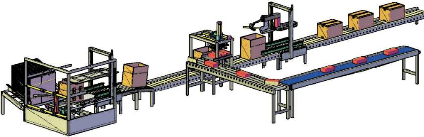
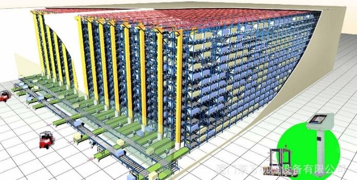
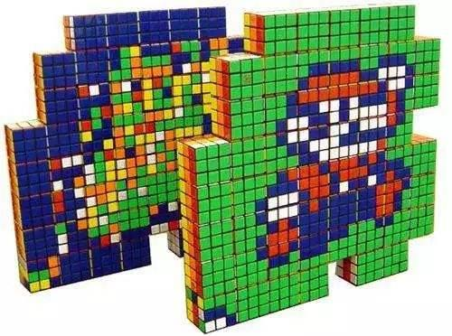
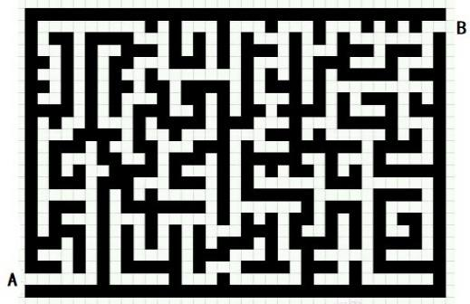

第 1 页 · 数智人才培养

数智人才培养
AI通识精品系列
周苏 教授 QQ：81505050
人工智能通识教程

第 2 页 · 第13章
第13章
周苏 教授 QQ：81505050
人工智能典型应用


第 3 页 · 人工智能的应用涵盖众多领域，深入到我们生活的各个方面，不仅提高效率，还开辟了全新的可能性。以下是一些突出的例子。
人工智能的应用涵盖众多领域，深入到我们生活的各个方面，不仅提高效率，还开辟了全新的可能性。以下是一些突出的例子。
（1）自然语言处理（NLP）：包括智能语音助手（如Siri、Alexa）、机器翻译（如谷歌翻译）、以及自动文本生成（如新闻稿自动生成、客服聊天机器人）。
（2）计算机视觉：应用于图像和视频分析，例如面部识别系统、自动驾驶汽车中的环境感知、医疗影像诊断等。
第13章 人工智能典型应用
第 4 页 · （3）推荐系统：电商平台（如亚马逊、淘宝）和流媒体服务（如Netflix、YouTube）使用AI来分析用户行为，提供个
（3）推荐系统：电商平台（如亚马逊、淘宝）和流媒体服务（如Netflix、YouTube）使用AI来分析用户行为，提供个性化的产品或内容推荐。
（4）自动化与机器人技术：工业机器人用于制造流程中的重复性任务；服务机器人则可以在零售、酒店业等领域提供客户服务。
（5）智能决策支持：金融行业利用人工智能进行风险评估、欺诈检测、投资策略优化等；物流和供应链管理中也用AI优化路线规划和库存控制。
第13章 人工智能典型应用
第 5 页 · （6）游戏与娱乐：人工智能在电子游戏中创建动态难度调整、非玩家角色（NPC）的行为逻辑，以及生成新的游戏内容等。
（6）游戏与娱乐：人工智能在电子游戏中创建动态难度调整、非玩家角色（NPC）的行为逻辑，以及生成新的游戏内容等。
（7）健康医疗：人工智能辅助诊断工具帮助医生更准确地判断病情，个性化治疗方案设计，药物发现过程加速等。
第13章 人工智能典型应用
第 6 页 · 01

01
AIGC文本
生成技术
02
AIGC图像
生成应用
03
预测分析：
葡萄酒的品质
04
智能
推荐系统
目录 / CONTENTS
05
自动规划
问题
第 7 页 · PART 01
PART 01
AIGC文本生成技术
第 8 页 · 近年来迅速发展的AIGC（人工智能生成内容）文本生成技术已经走向实际应用，不断推动着自然语言处理的领域边界。它允许机器根
近年来迅速发展的AIGC（人工智能生成内容）文本生成技术已经走向实际应用，不断推动着自然语言处理的领域边界。它允许机器根据给定的提示或上下文创建全新的、有意义的文本内容。这些技术在应用中展示了巨大潜力，包括自动写作、聊天机器人、翻译系统、对话系统等。
13.1 AIGC文本生成技术
第 9 页 · 文本摘要是自然语言处理中的一个重要任务，旨在从较长的文本中提取关键信息生成概括。应用深度学习方法，文本摘要技术，能够处理
文本摘要是自然语言处理中的一个重要任务，旨在从较长的文本中提取关键信息生成概括。应用深度学习方法，文本摘要技术，能够处理各种类型的文档，并在多个应用场景中表现出色，推动着自然语言处理向更高层次发展。
一个好的摘要应该具有以下特点：
（1）简洁性：用尽可能少的文字传达必要的信息。
（2）连贯性：确保生成的摘要逻辑清晰，易于理解。
（3）准确性：忠实于原文的意思，不歪曲或遗漏重要细节。
13.1.1 文本摘要技术
第 10 页 · 根据生成方式的不同，文本摘要可以分为两大类：
根据生成方式的不同，文本摘要可以分为两大类：
（1）抽取式摘要：直接从原始文本中选择最相关的句子或片段组成摘要，而不改变其内容。常见的算法包括TF-IDF（词频-逆文档频率）、TextRank等图模型，以及基于注意力机制的方法。其优点是简单直观，容易实现；保持了原文的语言风格。但是，它可能无法捕捉到全局语义结构，有时会显得冗长或重复。
13.1.1 文本摘要技术
第 11 页 · （2）生成式摘要：通过理解和重述原文来创建全新的句子，类似于人类撰写摘要的方式。它主要依赖于序列到序列（Seq2Seq）
（2）生成式摘要：通过理解和重述原文来创建全新的句子，类似于人类撰写摘要的方式。它主要依赖于序列到序列（Seq2Seq）架构及其变体，如带有注意力机制的RNN/LSTM、Transformer等。其优点是能够生成更紧凑且流畅的摘要，更接近人类撰写的质量。但它训练难度较大，需要大量标注数据；可能会引入事实错误或产生幻觉，即生成不符合实际的信息。
13.1.1 文本摘要技术
第 12 页 · 文本摘要技术已经被广泛应用于各个领域，例如：
文本摘要技术已经被广泛应用于各个领域，例如：
• 新闻媒体：快速生成新闻标题和简短报道。
• 法律文件：简化复杂的法规条款，便于公众理解和查阅。
• 学术研究：帮助研究人员高效浏览大量文献，找到感兴趣的论文。
• 企业报告：为管理层提供精炼的业务分析结果，辅助决策制定。
• 社交媒体监控：实时跟踪热点话题，汇总公众意见。
13.1.1 文本摘要技术
第 13 页 · 诗歌生成是自然语言处理中一个充满创意和挑战的任务，也是对美学和技术结合的一次探索，它要求机器不仅能够生成语法正确的句子，
诗歌生成是自然语言处理中一个充满创意和挑战的任务，也是对美学和技术结合的一次探索，它要求机器不仅能够生成语法正确的句子，还要捕捉到诗歌特有的韵律、节奏、情感以及诗意。随着深度学习技术的发展，尤其是基于Transformer架构的模型的成功应用，诗歌生成的质量得到了显著提升。
13.1.2 诗歌生成
第 14 页 · 诗歌生成的主要方法如下。
诗歌生成的主要方法如下。
（1）基于规则的方法：使用预定义的语法规则和模板来生成诗句。它简单直观，易于实现；可以保证生成的诗句符合特定格式（如五言绝句、七言律诗等）。但是，缺乏灵活性和多样性，难以产生真正富有创造性的作品。
13.1.2 诗歌生成
第 15 页 · （2）统计语言模型：通过分析大量诗歌数据中的词汇共现模式，预测下一个词的概率分布。它能捕捉到一定程度的语言规律，适用于简
（2）统计语言模型：通过分析大量诗歌数据中的词汇共现模式，预测下一个词的概率分布。它能捕捉到一定程度的语言规律，适用于简单的诗句生成。但是，生成的诗句可能较为机械，缺乏连贯性和深层次的情感表达。
（3）循环神经网络（RNNs）及其变体：利用LSTM或GRU等结构来处理序列数据，捕捉时间上的依赖关系。它能够生成具有一定连贯性和逻辑性的诗句；支持多轮对话形式的交互式诗歌创作。但是，对于长距离依赖关系的捕捉能力有限，容易出现“记忆衰退”现象。
13.1.2 诗歌生成
第 16 页 · （4）Transformer架构：引入了自注意力机制，使得模型可以并行处理输入序列的不同部分，更好地理解上下文信息。在大
（4）Transformer架构：引入了自注意力机制，使得模型可以并行处理输入序列的不同部分，更好地理解上下文信息。在大规模数据集上表现出色，能够学习复杂的模式并生成高质量的诗句；支持多种风格和主题的诗歌创作。代表性模型有：GPT系列、BERT、T5等都可以用于诗歌生成任务。
13.1.2 诗歌生成
第 17 页 · （5）强化学习：通过奖励函数引导模型生成更符合人类审美标准的诗句。它可以优化生成内容的艺术性和创造性；适合用于评估和改进
（5）强化学习：通过奖励函数引导模型生成更符合人类审美标准的诗句。它可以优化生成内容的艺术性和创造性；适合用于评估和改进现有的生成模型。但是，设计有效的奖励函数是一个难题，需要大量的标注数据和试错过程。
13.1.2 诗歌生成
第 18 页 · 诗歌生成的模型与工具中，开源项目主要有：
诗歌生成的模型与工具中，开源项目主要有：
（1）poetGAN：结合生成对抗网络（GANs）思想，旨在提高生成诗句的真实感和多样性。
（2）使用深度学习生成诗歌：基于TensorFlow，提供了多种经典诗歌生成算法的实现。
13.1.2 诗歌生成
第 19 页 · （3）WuDao Poetry机器人：是随“悟道”大模型开源社区衍生出的一个“古诗生成”昵称，其核心能力来源于北京智源人
（3）WuDao Poetry机器人：是随“悟道”大模型开源社区衍生出的一个“古诗生成”昵称，其核心能力来源于北京智源人工智能研究院2021年起发布的WuDao（悟道）超大规模中文预训练模型，专为中文诗歌生成而设计，支持古风、现代等多种风格。
13.1.2 诗歌生成
第 20 页 · 诗歌生成的主要应用场景如下。
诗歌生成的主要应用场景如下。
（1）教育领域：辅助学生学习古典文学知识，激发创造力和写作兴趣。
（2）文化娱乐：为用户提供个性化的诗歌推荐服务，或者举办线上诗歌创作比赛。
（3）社交互动：帮助人们表达情感，增进彼此之间的交流；例如发送定制的情诗给爱人。
（4）艺术创作：艺术家们可以将生成的诗句融入其他媒介中，如绘画、音乐等，创造出独特的跨媒体作品。
13.1.2 诗歌生成
第 21 页 · 简单对话系统是自然语言处理和人工智能领域的一个应用，旨在通过计算机程序实现人机之间的自然对话，为人们的生活带来极大的便利
简单对话系统是自然语言处理和人工智能领域的一个应用，旨在通过计算机程序实现人机之间的自然对话，为人们的生活带来极大的便利。其核心任务是从用户输入中理解意图，并根据上下文生成合适的回复。这一过程涉及以下几个关键步骤：
步骤1：输入解析：将用户的文本或语音输入转换为机器可以处理的形式，如词向量或特征表示。
步骤2：意图识别：确定用户表达的具体需求或问题类型，这可以通过分类模型来完成。
13.1.3 简单对话系统
第 22 页 · 步骤3：槽位填充：提取出与特定任务相关的实体信息（如时间、地点等），这些被称为“槽位”。
步骤3：槽位填充：提取出与特定任务相关的实体信息（如时间、地点等），这些被称为“槽位”。
步骤4：对话管理：根据当前对话状态选择适当的响应策略，决定下一步的操作。
步骤5：输出生成：基于选定的策略构造并返回给用户的最终回答，可以是预定义模板中的句子或是通过生成模型创建的新文本。
13.1.3 简单对话系统
第 23 页 · 简单对话系统的常见架构主要如下。
简单对话系统的常见架构主要如下。
（1）规则基础型：依赖于人工编写的规则和模式匹配来进行对话控制。它易于理解和实现；对于结构化强的任务效果较好。但灵活性差，难以应对复杂或未预见的情况。
（2）检索式：从预先准备好的候选回复库中挑选最匹配的回答。它可以使用TF-IDF、Word2Vec或其他相似度计算方法来衡量输入与候选回复之间的相关性。其优点是快速且稳定；不需要复杂的训练过程。但缺乏创造性和适应新情境的能力。
13.1.3 简单对话系统
第 24 页 · （3）生成式：利用深度学习模型（如RNN、LSTM、Transformer等）直接生成新的回复文本。常见的有Seq2Se
（3）生成式：利用深度学习模型（如RNN、LSTM、Transformer等）直接生成新的回复文本。常见的有Seq2Seq架构及其变体，结合注意力机制可以提高生成质量，它能够产生更自然流畅的对话；具有一定的创造性。但需要大量标注数据进行训练；可能会引入事实错误或幻觉。
（4）混合型：结合检索式和生成式的优点，先尝试检索合适的回复，若找不到满意结果再使用生成模型补充。兼顾了效率和灵活性，适用于多种场景。
13.1.3 简单对话系统
第 25 页 · 其技术组件主要如下。
其技术组件主要如下。
• 自然语言理解（NLU）：负责解析用户输入，包括分词、词性标注、命名实体识别等任务。
• 对话管理器（DM）：维护对话状态，跟踪对话历史，决定下一步动作。
• 自然语言生成（NLG）：将对话管理器的指令转化为人类可读的语言形式。
• 知识库/数据库：存储有关领域的背景知识，供对话系统查询以提供准确的答案。
13.1.3 简单对话系统
第 26 页 · 简单对话系统广泛应用于各个行业，例如：
简单对话系统广泛应用于各个行业，例如：
（1）客户服务：自动应答客户的常见问题，如订单状态查询、退换货政策等。
（2）信息查询：帮助用户获取天气预报、新闻资讯、公共交通时刻表等实用信息。
（3）教育辅导：辅助学生解答作业题，提供学习建议。
（4）娱乐互动：聊天机器人、虚拟助手等，让用户享受个性化交流体验。
（5）智能家居：控制家电设备，设置提醒事项等。
13.1.3 简单对话系统
第 27 页 · 文本生成技术在翻译任务中的应用已经取得了显著的进展，尤其是在神经机器翻译（NMT）领域，它不仅改变了传统翻译行业的工作方
文本生成技术在翻译任务中的应用已经取得了显著的进展，尤其是在神经机器翻译（NMT）领域，它不仅改变了传统翻译行业的工作方式，也为人们跨越语言障碍提供了前所未有的便利。通过利用深度学习模型的强大表示能力和生成能力，现代翻译系统能够提供更准确、流畅且自然的翻译结果。
13.1.4 翻译任务中的应用
第 28 页 · （1）神经机器翻译（NMT）。其架构特点主要如下：
（1）神经机器翻译（NMT）。其架构特点主要如下：
• 编码器-解码器结构：其中编码器将源语言句子转换为一个连续的向量表示（上下文向量），解码器则基于这个向量生成目标语言的句子。
• 注意力机制：使得解码器可以在每一步都关注到源句子的不同部分，从而提高了长句和复杂结构翻译的质量。
13.1.4 翻译任务中的应用
第 29 页 · 常见模型主要有：
常见模型主要有：
• RNN/LSTM/GRU：早期NMT模型多使用递归神经网络及其变体，如LSTM和GRU，来处理序列数据。这些模型能够捕捉时间上的依赖关系，但存在训练速度慢和难以并行化的问题。
• Transformer：基于自注意力机制的Transformer架构已经成为主流，它不仅支持高效的并行计算，还能更好地建模长距离依赖关系，极大地提升了翻译性能。
13.1.4 翻译任务中的应用
第 30 页 · （2）多模态翻译。除了纯文本输入外，一些研究探索了结合图像、音频等其他形式的数据来进行翻译。例如在旅游指南或产品说明书中
（2）多模态翻译。除了纯文本输入外，一些研究探索了结合图像、音频等其他形式的数据来进行翻译。例如在旅游指南或产品说明书中，图片可以辅助理解文字内容，提高翻译准确性。
13.1.4 翻译任务中的应用
第 31 页 · （3）低资源语言的支持。对于那些缺乏大规模平行语料库的语言对，研究人员开发了多种策略来增强翻译效果：
（3）低资源语言的支持。对于那些缺乏大规模平行语料库的语言对，研究人员开发了多种策略来增强翻译效果：
• 迁移学习：利用高资源语言的知识迁移到低资源语言上，例如共享参数或预训练模型。
• 无监督翻译：仅依靠单语数据进行训练，通过对抗训练或其他方法实现跨语言映射。
• 数据增强：通过对现有数据集进行扩增或合成新样本，增加可用训练数据的数量和多样性。
13.1.4 翻译任务中的应用
第 32 页 · （4）集成与混合方法。为了充分利用不同方法的优势，许多系统采用了集成或混合的方法：
（4）集成与混合方法。为了充分利用不同方法的优势，许多系统采用了集成或混合的方法：
• 规则+统计+NMT：结合传统的基于规则方法、统计机器翻译（SMT）以及NMT，以弥补各自不足之处。
• 多模型融合：同时运行多个独立的翻译模型，并通过某种方式组合它们的输出，如加权平均或选择最佳候选。
13.1.4 翻译任务中的应用
第 33 页 · （5）后编辑与人机协作。尽管自动翻译系统的质量不断提高，但在某些情况下仍然需要人工干预。因此，出现了“后编辑”模式，即先
（5）后编辑与人机协作。尽管自动翻译系统的质量不断提高，但在某些情况下仍然需要人工干预。因此，出现了“后编辑”模式，即先由机器生成初步翻译，再由专业译者进行校正和完善。此外，还有些工具支持实时的人机协作，让译者可以直接参与到翻译过程中，指导模型改进特定领域的术语使用或风格偏好。
13.1.4 翻译任务中的应用
第 34 页 · 翻译任务中的应用实例例如：
翻译任务中的应用实例例如：
（1）谷歌翻译：这是全球最受欢迎的在线翻译服务之一，它广泛采用了NMT技术，支持超过100种语言之间的互译。
（2）DeepL翻译器：它以高质量的翻译著称，特别是在欧洲语言间的翻译表现尤为突出。DeepL利用了Transformer架构，并且特别注重优化翻译的流畅性和准确性。
（3）微软Azure 认知服务：提供了丰富的API接口，允许开发者轻松集成先进的翻译功能到自己的应用程序中。
13.1.4 翻译任务中的应用
第 35 页 · PART 02
PART 02
AIGC图像生成应用
第 36 页 · 图像生成技术能够创建逼真的视觉内容或艺术化效果，被广泛地应用于艺术创作、娱乐媒体、虚拟现实、游戏开发、广告设计、医疗影像
图像生成技术能够创建逼真的视觉内容或艺术化效果，被广泛地应用于艺术创作、娱乐媒体、虚拟现实、游戏开发、广告设计、医疗影像合成以及自动化内容生成等多个行业和领域。
13.2 AIGC图像生成应用
第 37 页 · 1. 艺术与设计
1. 艺术与设计
（1）创意辅助：艺术家和设计师可以利用图像生成技术快速生成概念图、纹理、图案等，激发灵感并加速创作过程。作为辅助工具，它帮助艺术家探索新的创意方向，尝试不同风格的表现形式，它还可以自动生成具有特定艺术风格的作品，用于装饰、展览等多种用途。
（2）风格迁移：将不同艺术作品的风格特点融合在一起，创造出独特的视觉效果，适用于绘画、摄影等多种形式的艺术创作。
13.2 AIGC图像生成应用
第 38 页 · 2. 娱乐与媒体
2. 娱乐与媒体
（1）虚拟角色设计：用于创建游戏角色、电影角色或其他数字人物的形象，确保每个角色都有独特的外观和个性。创建更加丰富和互动的游戏环境，如NPC行为模拟、关卡设计等。通过AI驱动的虚拟人物进行直播或表演，提供全新的娱乐形式。
（2）虚拟现实（VR）和增强现实（AR）：生成逼真的虚拟环境、物体或生物，提升用户的沉浸感和交互体验，如游戏场景、虚拟旅游等，增强用户的沉浸感。
13.2 AIGC图像生成应用
第 39 页 · （3）影视特效制作：快速生成符合导演意图的高质量的特效镜头、虚拟场景、觉效果和场景氛围，减少实际拍摄的成本和难度，例如背
（3）影视特效制作：快速生成符合导演意图的高质量的特效镜头、虚拟场景、觉效果和场景氛围，减少实际拍摄的成本和难度，例如背景合成、特效制作等，减少实际拍摄的成本和难度，节省后期制作时间。
（4）视频处理：实现老旧影片或低清视频的高清化，提升观看体验；也可用于实时视频通话中的画质增强。
13.2 AIGC图像生成应用
第 40 页 · 3. 广告与营销
3. 广告与营销
（1）个性化内容生成与定制：根据目标受众特点快速生成定制化广告素材，提高广告相关性和吸引力，如生成特定风格的产品图片或宣传海报。根据品牌调性和市场需求生成独特的产品包装、宣传海报等视觉材料。
（2）A/B测试优化：快速生成多种版本的广告创意，用A/B测试找到最有效的设计方案。
（3）增强用户体验（UX）：为用户提供个性化的界面主题或背景图案，提升交互乐趣。
13.2 AIGC图像生成应用
第 41 页 · 4. 医疗健康
4. 医疗健康
（1）医学影像分析：提升CT、MRI等医学成像设备获取的图像分辨率，帮助医生更准确地诊断疾病发现细微病变，更好地理解和预测疾病，例如生成更多的CT扫描图像或X光片，辅助诊断和治疗计划。
（2）手术模拟与训练：生成详细的虚拟患者模型（三维重建图像），供外科医生练习复杂的手术操作，降低实际手术风险。
（3）康复训练：创建个性化的康复方案，帮助患者在家完成专业的物理治疗课程。
13.2 AIGC图像生成应用
第 42 页 · （4）疾病检测：生成更多样化的病变图像，帮助医生识别早期症状或难以察觉的微小变化，提高诊断准确性。
（4）疾病检测：生成更多样化的病变图像，帮助医生识别早期症状或难以察觉的微小变化，提高诊断准确性。
（5）病理分析：通过合成不同阶段的病理切片图像，深入理解疾病的发展过程，指导个性化治疗策略。
（6）放疗计划：优化放射治疗剂量分布图，确保肿瘤区域得到充分照射的同时最大限度地保护周围正常组织。
13.2 AIGC图像生成应用
第 43 页 · （7）数据增强：为训练机器学习模型提供更多样化的数据集，尤其是针对罕见病或特殊病例，提高模型的鲁棒性和泛化能力。
（7）数据增强：为训练机器学习模型提供更多样化的数据集，尤其是针对罕见病或特殊病例，提高模型的鲁棒性和泛化能力。
（8）减少辐射暴露：利用合成图像代替真实的X光片或CT扫描，减少患者接受的辐射剂量，特别是儿童和孕妇等敏感群体。
13.2 AIGC图像生成应用
第 44 页 · 5. 自动驾驶
5. 自动驾驶
（1）场景模拟：模拟各种驾驶场景，测试和改进车辆的安全性能，包括天气变化、交通状况等因素。
（2）数据增强：为训练自动驾驶算法提供多样化的数据集，提高系统的鲁棒性和泛化能力。
13.2 AIGC图像生成应用
第 45 页 · 6. 时尚与零售
6. 时尚与零售
（1）虚拟试衣：通过生成用户穿着不同服装的效果图，提供在线购物时的参考，改善用户体验。
（2）产品展示：快速生成高质量的产品设计草图或渲染图，加速研发流程，用于电商平台的商品展示，无需实物拍摄即可呈现多种视角和细节。
（3）消费电子：应用于智能手机、平板电脑等设备，即使在不理想的拍摄条件下也能获得高质量的照片和视频。
13.2 AIGC图像生成应用
第 46 页 · 7. 建筑与房地产
7. 建筑与房地产
（1）建筑设计可视化：生成建筑外观和内部空间的效果图，帮助客户直观地理解设计方案，促进销售。
（2）房产营销：生成虚拟的室内装饰方案，让潜在买家提前体验未来的居住环境。
13.2 AIGC图像生成应用
第 47 页 · 8. 教育与培训
8. 教育与培训
（1）互动学习材料：生成生动的教学资源，如教学插图、科学实验动画、历史场景重现等，使学习更加有趣和有效。
（2）职业技能训练：模拟真实的工作环境，如工厂生产线、医院急诊室等，培养学生的专业技能。
13.2 AIGC图像生成应用
第 48 页 · 9. 科学研究
9. 科学研究
（1）数据可视化：生成复杂数据的图形表示，帮助研究人员更清晰地理解实验结果，发现新的模式或趋势。
（2）模拟实验：在无法直接观察或实验的情况下，通过生成图像来推测可能的结果，如天文学（3）卫星遥感：改善卫星拍摄的照片质量，用于地理测绘、环境监测等领域，提供更高精度的数据支持。
13.2 AIGC图像生成应用
第 49 页 · 10. 安全与监控
10. 安全与监控
（1）异常检测：结合图像生成技术与监控系统，实时生成正常情况下的预期图像，对比实际画面以识别异常行为或事件。
（2）隐私保护：在不泄露个人身份信息的前提下，生成模糊处理后的监控图像，既保持了监控的有效性又保护了隐私。
（3）监控系统：从低分辨率监控摄像头捕获的画面中提取更多有用信息，辅助安防工作，如人脸识别、车牌识别等。
13.2 AIGC图像生成应用
第 50 页 · PART 03
PART 03
预测分析：葡萄酒的品质
第 51 页 · 奥利·阿什菲尔特是普林斯顿大学的一位经济学家，他的日常工作就是琢磨数据，利用统计学，他从大量的数据资料中提取出隐藏在数据
奥利·阿什菲尔特是普林斯顿大学的一位经济学家，他的日常工作就是琢磨数据，利用统计学，他从大量的数据资料中提取出隐藏在数据背后的信息。
奥利非常喜欢喝葡萄酒，他说：“当上好的红葡萄酒有了一定的年份时，就会发生一些非常神奇的事情。”
13.3 预测分析：葡萄酒的品质
第 52 页 · 当然，奥利指的不仅仅是葡萄酒的口感，还有隐藏在好葡萄酒和一般葡萄酒背后的力量。“每次你买到上好的红葡萄酒时，”他说，“其
当然，奥利指的不仅仅是葡萄酒的口感，还有隐藏在好葡萄酒和一般葡萄酒背后的力量。“每次你买到上好的红葡萄酒时，”他说，“其实就是在进行投资，因为这瓶酒以后很有可能会变得更好。而且你想知道的不是它现在值多少钱，而是将来值多少钱。即使你并不打算卖掉它，而是喝掉它。如果你想知道把从当前消费中得到的愉悦推迟，将来能从中得到多少愉悦，那么这将是一个永远也讨论不完的、吸引人的话题。”而这个话题奥利已研究了25年。
13.3 预测分析：葡萄酒的品质
第 53 页 · 奥利曾花费心思研究的一个问题是，如何通过数字评估波尔多葡萄酒的品质。与品酒专家通常所使用的“品咂并吐掉”的方法不同，奥利
奥利曾花费心思研究的一个问题是，如何通过数字评估波尔多葡萄酒的品质。与品酒专家通常所使用的“品咂并吐掉”的方法不同，奥利用数字指标来判断能拍出高价的酒所应该具有的品质特征。“其实很简单，”他说，“酒是一种农产品，每年都会受到气候条件的强烈影响。”因此奥利收集了法国波尔多地区的气候数据加以研究，他发现如果收割季节干旱少雨且整个夏季的平均气温较高，该年份就容易生产出品质上乘的葡萄酒。正如彼得·帕塞尔在《纽约时报》中报告的那样，奥利给出的统计方程与数据高度吻合。
13.3 预测分析：葡萄酒的品质
第 54 页 · 当葡萄熟透、汁液高度浓缩时，波尔多葡萄酒是最好的。夏季特别炎热的年份，葡萄很容易熟透，酸度就会降低。炎热少雨的年份，葡萄
当葡萄熟透、汁液高度浓缩时，波尔多葡萄酒是最好的。夏季特别炎热的年份，葡萄很容易熟透，酸度就会降低。炎热少雨的年份，葡萄汁也会高度浓缩。因此，天气越炎热干燥，越容易生产出品质一流的葡萄酒。熟透的葡萄能生产出口感柔润（即低敏度）的葡萄酒，而汁液高度浓缩的葡萄能够生产出醇厚的葡萄酒。
13.3 预测分析：葡萄酒的品质
第 55 页 · 奥利把这个葡萄酒的理论简化为下面的方程式：
奥利把这个葡萄酒的理论简化为下面的方程式：
葡萄酒的品质 = 12.145 + 0.00117 × 冬天降雨量 + 0.0614 ×
葡萄生长期平均气温 - 0.00386 × 收获季节降雨量
把任何年份的气候数据代入这个式子，奥利就能够预测出任意一种葡萄酒的平均品质。如果把这个式子变得再稍微复杂精巧一些，还能更精确地预测出100多个酒庄的葡萄酒品质。他承认“这看起来有点太数字化了”，“但这恰恰是法国人把他们葡萄酒庄园排成著名的1855个等级时所使用的方法”。
13.3 预测分析：葡萄酒的品质
第 56 页 · 然而，当时传统的评酒专家并未接受奥利利用数据预测葡萄酒品质的做法。英国的《葡萄酒》杂志认为，“这条公式显然是很可笑的，我
然而，当时传统的评酒专家并未接受奥利利用数据预测葡萄酒品质的做法。英国的《葡萄酒》杂志认为，“这条公式显然是很可笑的，我们无法重视它。”纽约葡萄酒商人威廉姆·萨科林认为，从波尔多葡萄酒产业的角度来看，奥利的做法“介于极端和滑稽可笑之间”。因此，奥利常常被业界人士取笑。当奥利在克里斯蒂拍卖行酒品部做关于葡萄酒的演讲时，坐在后排的交易商嘘声一片。
13.3 预测分析：葡萄酒的品质
第 57 页 · 发行过《葡萄爱好者》杂志的罗伯特·帕克大概是世界上最有影响力的以葡萄酒为题材的作家了。他把奥利形容为“一个彻头彻尾的骗子
发行过《葡萄爱好者》杂志的罗伯特·帕克大概是世界上最有影响力的以葡萄酒为题材的作家了。他把奥利形容为“一个彻头彻尾的骗子”，尽管奥利是世界上最受敬重的数量经济学家之一，但是他的方法对于帕克来说，“其实是在用尼安德特人的思维（讽刺其思维原始）来看待葡萄酒。这是非常荒谬甚至非常可笑的。”帕克完全否定了数学方程式有助于鉴别出口感真正好的葡萄酒，“如果他邀请我去他家喝酒，我会感到恶心。”帕克说奥利“就像某些影评一样，根据演员和导演来告诉你电影有多好，实际上却从没看过那部电影”。
13.3 预测分析：葡萄酒的品质
第 58 页 · 帕克的意思是，人们只有亲自去看过了一部影片，才能更精准地评价它，如果要对葡萄酒的品质评判得更准确，也应该亲自去品咂一下。
帕克的意思是，人们只有亲自去看过了一部影片，才能更精准地评价它，如果要对葡萄酒的品质评判得更准确，也应该亲自去品咂一下。但是有这样一个问题：在好几个月的时间里，人们是
无法品尝到葡萄酒的。波尔多和勃艮第
的葡萄酒在装瓶之前需要盛放在橡木桶
里发酵18~24个月。
13.3 预测分析：葡萄酒的品质
第 59 页 · 像帕克这样的评酒专家需要酒装在桶里4个月以后才能第一次品尝，在这个阶段，葡萄酒还只是臭臭的、发酵的葡萄而已。不知道此时这
像帕克这样的评酒专家需要酒装在桶里4个月以后才能第一次品尝，在这个阶段，葡萄酒还只是臭臭的、发酵的葡萄而已。不知道此时这种无法下咽的“酒”是否能够使品尝者得出关于酒的品质的准确信息。例如，巴特菲德拍卖行酒品部的前经理布鲁斯·凯泽曾经说过：“发酵初期的葡萄酒变化非常快，没有人，我是说不可能有人，能够通过品尝来准确地评估酒的好坏。至少要放上10年，甚至更久。”
13.3 预测分析：葡萄酒的品质
第 60 页 · 与之形成鲜明对比的是，奥利从对数字的分析中能够得出气候与酒价之间的关系。他发现冬季降雨量每增加1毫米，酒价就有可能提高0
与之形成鲜明对比的是，奥利从对数字的分析中能够得出气候与酒价之间的关系。他发现冬季降雨量每增加1毫米，酒价就有可能提高0.001 17美元。当然，这只是“有可能”而已。不过，对数据的分析使奥利可以在葡萄酒的未来品质——这是品酒师有机会尝到第一口酒的数月之前，更是在葡萄酒卖出的数年之前。在葡萄酒期货交易活跃的今天，奥利的预测能够给葡萄酒收集者极大的帮助。
13.3 预测分析：葡萄酒的品质
第 61 页 · 20世纪80年代后期，奥利开始在半年刊的简报《流动资产》上发布他的预测数据。最初，他在《葡萄酒观察家》上给这个简报做小广
20世纪80年代后期，奥利开始在半年刊的简报《流动资产》上发布他的预测数据。最初，他在《葡萄酒观察家》上给这个简报做小广告，随之有600多人开始订阅。这些订阅者的分布式很广泛的，包括很多百万富翁以及痴迷葡萄酒的人——这是一些可以接受计量方法的葡萄酒收集爱好者。与每年花30美元来订阅罗伯特·帕克的简报《葡萄酒爱好者》的30 000人相比，《流动资产》的订阅人数确实少得可怜。
13.3 预测分析：葡萄酒的品质
第 62 页 · 20世纪90年代初期，《纽约时报》在头版头条登出了奥利的最新预测数据，这使得更多人了解了他的思想。奥利公开批判了帕克对1
20世纪90年代初期，《纽约时报》在头版头条登出了奥利的最新预测数据，这使得更多人了解了他的思想。奥利公开批判了帕克对1986年波尔多葡萄酒的估价。帕克对1986年波尔多葡萄酒的评价是“品质一流，甚至非常出色”。但是奥利不这么认为，他认为由于生产期内过低的平均气温以及收获期过多的雨水，这一年葡萄酒的品质注定平平。
13.3 预测分析：葡萄酒的品质
第 63 页 · 当然，奥利对1989年波尔多葡萄酒的预测才是这篇文章中真正让人吃惊的地方，尽管当时这些酒在木桶里仅仅放置了3个月，还从未
当然，奥利对1989年波尔多葡萄酒的预测才是这篇文章中真正让人吃惊的地方，尽管当时这些酒在木桶里仅仅放置了3个月，还从未被品酒师品尝过，奥利预测这些酒将成为“世纪佳酿”。他保证这些酒的品质将会“令人震惊地一流”。根据他自己的评级，如果1961年的波尔多葡萄酒评级为100的话，那么1989年的葡萄酒将会达到149。奥利甚至大胆地预测，这些酒“能够卖出过去35年中所生产的葡萄酒的最高价”。
13.3 预测分析：葡萄酒的品质
第 64 页 · 看到这篇文章，评酒专家非常生气。帕克把奥利的数量估计描述为“愚蠢可笑”。萨科林说当时的反应是“既愤怒又恐惧。他确实让很多
看到这篇文章，评酒专家非常生气。帕克把奥利的数量估计描述为“愚蠢可笑”。萨科林说当时的反应是“既愤怒又恐惧。他确实让很多人感到恐慌。”在接下来的几年中，《葡萄酒观察家》拒绝为奥利（以及其他人）的简报做任何广告。
13.3 预测分析：葡萄酒的品质
第 65 页 · 评酒专家们开始辩解，极力指责奥利本人以及他所提出的方法。他们说他的方法是错的，因为这一方法无法准确地预测未来的酒价。例如
评酒专家们开始辩解，极力指责奥利本人以及他所提出的方法。他们说他的方法是错的，因为这一方法无法准确地预测未来的酒价。例如，《葡萄酒观察家》的品酒经理托马斯·马休斯抱怨说，奥利对价格的预测，“在27种酒中只有三次完全准确”。即使奥利的公式“是为了与价格数据相符而特别设计的”，他所预测的价格却“要么高于，要么低于真实的价格”。然而，对于统计学家（以及对此稍加思考的人）来说，预测有时过高，有时过低是件好事，因为这恰好说明估计量是无偏的。因此，帕克不得不常常降低自己最初的评级。
13.3 预测分析：葡萄酒的品质
第 66 页 · 1990年，奥利更加陷于孤立无援的境地。在宣称1989年的葡萄酒将成为“世纪佳酿”之后，数据告诉他1990年的葡萄酒将会
1990年，奥利更加陷于孤立无援的境地。在宣称1989年的葡萄酒将成为“世纪佳酿”之后，数据告诉他1990年的葡萄酒将会更好，而且他也照实说了。现在回头再看，我们可以发现当时《流动资产》的预测惊人地准确。1989年的葡萄酒确实是难得的佳酿，而1990年的也确实更好。怎么可能在连续两年中生产出两种“世纪佳酿”呢？事实上，自1986年以来，每年葡萄生长期的气温都高于平均水平。法国的天气连续20多年温暖和煦。对于葡萄酒爱好者们而言，这显然是生产柔润的波尔多葡萄酒的最适宜的时期。
13.3 预测分析：葡萄酒的品质
第 67 页 · 传统的评酒专家们现在才开始更多地关注天气因素。尽管他们当中很多人从未公开承认奥利的预测，但他们自己的预测也开始越来越密切
传统的评酒专家们现在才开始更多地关注天气因素。尽管他们当中很多人从未公开承认奥利的预测，但他们自己的预测也开始越来越密切地与奥利那个简单的方程式联系在一起。此时奥利依然在维护自己的网站，但他不再制作简报。他说：“和过去不同的是，品酒师们不再犯严重的错误了。坦率地说，我有点儿自绝前程，我不再有任何附加值了。”
指责奥利的人仍然把他的思想看作是异端邪说，因为他试图把葡萄酒的世界看得更清楚。他从不使用华丽的辞藻和毫无意义的术语，而是直接说出预测的依据。
13.3 预测分析：葡萄酒的品质
第 68 页 · 整个葡萄酒产业毫不妥协不仅仅是在做表面文章。“葡萄酒经销商及专栏作家只是不希望公众知道奥利所作出的预测。”凯泽说，“这一
整个葡萄酒产业毫不妥协不仅仅是在做表面文章。“葡萄酒经销商及专栏作家只是不希望公众知道奥利所作出的预测。”凯泽说，“这一点从1986年的葡萄酒就已经显现出来了。奥利说品酒师们的评级是骗人的，因为那一年的气候对于葡萄的生长来说非常不利，雨水泛滥，气温也不够高。但是当时所有的专栏作家都言辞激烈地坚持认为那一年的酒会是好酒。事实证明奥利是对的，但是正确的观点不一定总是受欢迎的。”
13.3 预测分析：葡萄酒的品质
第 69 页 · 葡萄酒经销商和专栏评论家们都能够从维持自己在葡萄酒品质方面的信息垄断者地位中受益。葡萄酒经销商利用长期高估的最初评级来稳
葡萄酒经销商和专栏评论家们都能够从维持自己在葡萄酒品质方面的信息垄断者地位中受益。葡萄酒经销商利用长期高估的最初评级来稳定葡萄酒价格。《葡萄酒观察家》和《葡萄酒爱好者》能否保持葡萄酒品质的仲裁者地位，决定着上百万资金的生死。很多人要谋生，就只能依赖于喝酒的人不相信这个方程式。也有迹象表明事情正在发生变化。伦敦克里斯蒂拍卖行国际酒品部主席迈克尔·布罗德本特委婉地说：“很多人认为奥利是个怪人，我也认为他在很多方面的确很怪。但是我发现，他的思想和工作会在多年后依然留下光辉的痕迹。他所做的努力对于打算买酒的人来说非常有帮助。”
13.3 预测分析：葡萄酒的品质
第 70 页 · PART 04
PART 04
智能推荐系统
第 71 页 · 智能推荐系统是一种利用人工智能技术分析用户行为和偏好，自动提供个性化内容或产品的系统，旨在提升用户体验和满意度。
智能推荐系统是一种利用人工智能技术分析用户行为和偏好，自动提供个性化内容或产品的系统，旨在提升用户体验和满意度。
13.4 智能推荐系统
第 72 页 · 成立于1997年的世界最大的在线影片租赁服务商奈飞（Netflix）是一家美国公司，总部位于加利福尼亚州洛斯盖图，公司在
成立于1997年的世界最大的在线影片租赁服务商奈飞（Netflix）是一家美国公司，总部位于加利福尼亚州洛斯盖图，公司在美国、加拿大、日本等国提供互联网随选流媒体播放，定制DVD、蓝光光碟在线出租业务。
2011年，奈飞的网络电影销量占据美国用户在线电影总销量的45%。2017年4月26日，奈飞与爱奇艺达成在剧集、动漫、纪录片、真人秀等领域的内容授权合作。2018年6月，奈飞进军漫画世界。
13.4.1 奈飞电影推荐系统
第 73 页 · 2012年9月21日奈飞宣布，来自186个国家和地区的四万多个团队经过近三年的较量，一个由来自奥地利、加拿大、以色列和美
2012年9月21日奈飞宣布，来自186个国家和地区的四万多个团队经过近三年的较量，一个由来自奥地利、加拿大、以色列和美国的计算机、统计和人工智能专家组成的7人团队BPC夺得了奈飞大奖。团队由原本是竞争对手的三个团队重新组团，颁奖仪式是成员们的第一次见面。
13.4.1 奈飞电影推荐系统
第 74 页 · 获奖团队成功地将奈飞的影片推荐引擎的推荐效率提高了10%。奈飞大奖的参赛者们不断改进影片推荐效率，奈飞的客户为此获益。这
获奖团队成功地将奈飞的影片推荐引擎的推荐效率提高了10%。奈飞大奖的参赛者们不断改进影片推荐效率，奈飞的客户为此获益。这项比赛的规则要求获胜团队公开他们采用的推荐算法，这样
很多商业都能从中获益。
13.4.1 奈飞电影推荐系统
第 75 页 · 第一个奈飞大奖成功的解决了一个巨大的挑战，为提供了50个以上评级的观众准确地预测他们的电影欣赏口味。随着一百万美金大奖的
第一个奈飞大奖成功的解决了一个巨大的挑战，为提供了50个以上评级的观众准确地预测他们的电影欣赏口味。随着一百万美金大奖的颁发。奈飞很快宣布了第二个百万美金大奖，希望世界上的计算机专家和机器学习专家们能够继续改进推荐引擎的效率。下一个百万大奖目标是，为那些不经常做影片评级或者根本不做评级的顾客推荐影片，要求使用一些隐藏着观众口味的地理数据和行为数据来进行预测。同样，获胜者需要公开他们的算法。如果解决这个问题，奈飞就能够很快开始向新客户推荐影片，而不需要等待客户提供大量的评级数据后才做出推荐。
13.4.1 奈飞电影推荐系统
第 76 页 · 新的比赛用数据集有1亿条数据，包括评级数据，顾客年龄，性别，居住地区邮编，和以前观看过的影片。所有的数据都是匿名的，没有
新的比赛用数据集有1亿条数据，包括评级数据，顾客年龄，性别，居住地区邮编，和以前观看过的影片。所有的数据都是匿名的，没有办法关联到奈飞的任何一个顾客。
推荐引擎是奈飞公司的一个关键服务，1千多万顾客都能在一个个性化网页上对影片做出1~5的评级。奈飞将这些评级放在一个巨大的数据集里，该数据集容量超过了30亿条。奈飞使用推荐算法和软件来标识具有相似品味的观众对影片可能做出的评级。几年来，奈飞已经使用参赛选手的方法提高了影片推荐的效率，得到很多影片评论家和用户的好评。
13.4.1 奈飞电影推荐系统
第 77 页 · 虽然亚马逊的故事大多数人都耳熟能详，但只有少数人知道它早期的书评内容是由人工完成的。当时，它聘请了一个由20多名书评家和
虽然亚马逊的故事大多数人都耳熟能详，但只有少数人知道它早期的书评内容是由人工完成的。当时，它聘请了一个由20多名书评家和编辑组成的团队，他们写书评、推荐新书，挑选非常有特色的新书标题放在亚马逊的网页上。这个团队创立了“亚马逊的声音”这个版块，成为当时公司皇冠上的一颗宝石，是其竞争优势的重要来源。《华尔街日报》的一篇文章中热情地称他们为全美最有影响力的书评家，因为他们使得书籍销量猛增。
亚马逊公司的创始人及总裁杰夫·贝索斯决定尝试一个极富创造力的想法：根据客户个人以前的购物喜好，为其推荐相关的书籍。
13.4.2 亚马逊图书推荐系统
第 78 页 · 从一开始，亚马逊就从每一个客户那里收集了大量的数据。比如说，他们购买了什么书籍？哪些书他们只浏览却没有购买？他们浏览了多
从一开始，亚马逊就从每一个客户那里收集了大量的数据。比如说，他们购买了什么书籍？哪些书他们只浏览却没有购买？他们浏览了多久？哪些书是他们一起购买的？客户的信息数据量非常大，所以亚马逊必须先用传统的方法对其进行处理，通过样本分析找到客户之间的相似性。但这些推荐信息是非常原始的，就如同你在买一件婴儿用品时，会被淹没在一堆差不多的婴儿用品中一样。詹姆斯·马库斯回忆说：“推荐信息往往为你提供与你以前购买物品有微小差异的产品，并且循环往复。”
13.4.2 亚马逊图书推荐系统
第 79 页 · 亚马逊的格雷格·林登很快就找到了一个解决方案。他意识到，推荐系统实际上并没有必要把顾客与其他顾客进行对比，这样做其实在技
亚马逊的格雷格·林登很快就找到了一个解决方案。他意识到，推荐系统实际上并没有必要把顾客与其他顾客进行对比，这样做其实在技术上也比较繁琐。它需要做的是找到产品之间的关联性。1998年，林登和他的同事申请了著名的“item-to-item（逐项）”协同过滤技术的专利。方法的转变使技术发生了翻天覆地的变化。
13.4.2 亚马逊图书推荐系统
第 80 页 · 因为估算可以提前进行，所以推荐系统不仅快，而且适用于各种各样的产品。因此，当亚马逊跨界销售除书以外的其他商品时，也可以对
因为估算可以提前进行，所以推荐系统不仅快，而且适用于各种各样的产品。因此，当亚马逊跨界销售除书以外的其他商品时，也可以对电影或烤面包机这些产品进行推荐。由于系统中使用了所有的数据，推荐会更理想。林登回忆道：“在组里有句玩笑话，说的是如果系统运作良好，亚马逊应该只推荐你一本书，而这本书就是你将要买的下一本书。”
13.4.2 亚马逊图书推荐系统
第 81 页 · 现在，公司必须决定什么应该出现在网站上。是亚马逊内部书评家写的个人建议和评论，还是由机器生成的个性化推荐和畅销书排行榜？
现在，公司必须决定什么应该出现在网站上。是亚马逊内部书评家写的个人建议和评论，还是由机器生成的个性化推荐和畅销书排行榜？林登做了一个关于评论家所创造的销售业绩和计算机生成内容所产生的销售业绩的对比测试，结果他发现两者之间相差甚远。他解释说，通过数据推荐产品所增加的销售远远超过书评家的贡献。计算机可能不知道为什么喜欢海明威作品的客户会购买菲茨·杰拉德的书。但是这似乎并不重要，重要的是销量。
13.4.2 亚马逊图书推荐系统
第 82 页 · 最后，编辑们看到了销售额分析，亚马逊也不得不放弃每次的在线评论，最终，书评组被解散了。林登回忆说：“书评团队被打败、被解
最后，编辑们看到了销售额分析，亚马逊也不得不放弃每次的在线评论，最终，书评组被解散了。林登回忆说：“书评团队被打败、被解散，我感到非常难过。但是，数据没有说谎，人工评论的成本是非常高的。”
如今，据说亚马逊销售额的三分之一都来自于它的个性化推荐系统。有了它，亚马逊不仅使很多大型书店和音乐唱片商店歇业，而且数百个自认为有自己风格的书商也受转型之风的影响。
13.4.2 亚马逊图书推荐系统
第 83 页 · 知道人们为什么对这些信息感兴趣可能是有用的，但这个问题目前并不是很重要。但是，知道“是什么”可以创造点击率，这种洞察力足
知道人们为什么对这些信息感兴趣可能是有用的，但这个问题目前并不是很重要。但是，知道“是什么”可以创造点击率，这种洞察力足以重塑很多行业，不仅仅只是电子商务。所有行业中的销售人员早就被告知，他们需要了解是什么让客户做出了选择，要把握客户做决定背后的真正原因，因此专业技能和多年的经验受到高度重视。大数据却显示，还有另外一个在某些方面更有用的方法。亚马逊的推荐系统梳理出了有趣的相关关系，但不知道背后的原因——知道是什么就够了，没必要知道为什么。
13.4.2 亚马逊图书推荐系统
第 84 页 · PART 05
PART 05
自动规划问题
第 85 页 · 自动规划属于一种重要的高级问题求解系统与技术。与一般问题求解相比，自动规划更注重于问题的求解过程，而不是求解结果。此外，
自动规划属于一种重要的高级问题求解系统与技术。与一般问题求解相比，自动规划更注重于问题的求解过程，而不是求解结果。此外，规划要解决的问题，如机器人世界问题，往往具有真实性，而不是比较抽象的数学模型问题。由于自动规划系统具有广泛的应用场合和应用前景，因而引起人们的浓厚兴趣并取得了许多研究
成果。
13.5 自动规划问题

第 86 页 · 所谓规划，是指个人或组织制定的比较全面长远的发展计划，是对未来整体性、长期性、基本性问题的考量，以设计未来的整套行动方案
所谓规划，是指个人或组织制定的比较全面长远的发展计划，是对未来整体性、长期性、基本性问题的考量，以设计未来的整套行动方案。规划是融合多要素、多人士看法的某一特定领域的发展愿景，它代表了人类为实现目标而对活动进行调整的一种某种自我意识和能力。
在日常生活中，规划意味着在行动之前决定其进程，或者说，是在执行一个问题求解程序之前，计算该程序具体执行的过程。规划可用来监控问题求解过程，并能够在造成较大危害之前发现差错。规划的好处可归纳为简化搜索、解决目标矛盾以及为差错补偿提供基础。
13.5.1 什么是规划
第 87 页 · 规划有两个突出的特点，一是为了完成任务可能需要一系列确定的步骤；二是定义问题解决方案的步骤顺序可能是有条件的。也就是说，
规划有两个突出的特点，一是为了完成任务可能需要一系列确定的步骤；二是定义问题解决方案的步骤顺序可能是有条件的。也就是说，构成规划的步骤可能会根据条件进行修改（称为条件规划）。
一个规划是一个行动过程的描述，它虽然可以是像商品清单那样的没有次序的目标列表，但一般都具有某个目标的蕴含排序。例如，一个机器人要搬动某工件，必须先移动到该工件附近，抓住该工件，然后带着工件移动。
13.5.1 什么是规划
第 88 页 · 大多数规划都具有子规划结构，具有分层结构的每个子目标由达到此目标的比较详细的子规划确定，最终得到的规划是某个问题求解算符
大多数规划都具有子规划结构，具有分层结构的每个子目标由达到此目标的比较详细的子规划确定，最终得到的规划是某个问题求解算符的线性或分步排序。
13.5.1 什么是规划
第 89 页 · 规划的概念很多，具体可以整理成如下几点：
规划的概念很多，具体可以整理成如下几点：
（1）从某个特定的问题状态出发，寻求一系列行为动作并建立一个操作序列，直到求得目标状态为止，这个求解过程就是规划；
（2）规划是关于动作的推理，它是一种抽象但清晰的深思熟虑的过程，该过程通过预期动作的期望效果，选择和组织一组动作，其目的是尽可能好地实现一个预先给定的目标；
13.5.1 什么是规划
第 90 页 · （3）规划是针对某个待求解问题给出求解过程的步骤，规划设计如何将问题分解为若干相应的子问题，记录和处理问题求解过程中发现
（3）规划是针对某个待求解问题给出求解过程的步骤，规划设计如何将问题分解为若干相应的子问题，记录和处理问题求解过程中发现的子问题间的关系；
（4）规划系统是一个涉及有关问题求解过程的步骤的系统。
把某些较复杂的问题分解为一些较小的子问题。有两条实现这种分解的重要途径。第一条是当从一个问题状态移动到下一个状态时，无需计算整个新的状态，而只要考虑状态中可能变化了的那些部分。第二条是把单一困难问题分割为几个有希望较为容易解决的子问题。
13.5.1 什么是规划
第 91 页 · 规划一直是人工智能研究的活跃领域，包括机器人技术、流程规划、基于Web的信息收集、自主智能体、动画和多智能体。人工智能中
规划一直是人工智能研究的活跃领域，包括机器人技术、流程规划、基于Web的信息收集、自主智能体、动画和多智能体。人工智能中一些典型的规划问题如：
13.5.2 定义自动规划

第 92 页 · （1）对时间、因果关系和目的的表示和推理。
（1）对时间、因果关系和目的的表示和推理。
（2）在可接受的解决方案中，物理和其他类型的约束。
（3）规划执行中的不确定性。
（4）如何感觉和感知“现实世界”。
（5）可能合作或互相干涉的多个智能体。
13.5.2 定义自动规划
第 93 页 · 以机器人规划与问题求解作为典型例子来讨论自动规划，是因为机器人规划能够得到形象和直观的检验，它是机器人学的一个重要研究领
以机器人规划与问题求解作为典型例子来讨论自动规划，是因为机器人规划能够得到形象和直观的检验，它是机器人学的一个重要研究领域，也是人工智能与机器人学一个令人感兴趣的结合点。机器人规划的原理、方法和技术可以推广应用到其他规划对象或系统。
虽然通常会将规划和调度视为相同的问题类型，但它们之间有一个明确的区别：规划关注“找出需要执行哪些操作”，而调度关注“计算出何时执行动作”。规划侧重于为实现目标选择适当的行动序列，而调度侧重于资源约束（包括时间）。可以把调度问题当作规划问题的一个特例。
13.5.2 定义自动规划
第 94 页 · 在人工智能领域，所有规划问题的本质就是将当前状态（可能是初始状态）转变为所需目标状态。求解规划问题所遵循的步骤顺序称为操
在人工智能领域，所有规划问题的本质就是将当前状态（可能是初始状态）转变为所需目标状态。求解规划问题所遵循的步骤顺序称为操作符模式。操作符模式表征动作或事件（可互换使用的术语）。操作符模式表征一类可能的变量，这些变量可以用值（常数）代替，构成描述特定动作的操作符实例。“操作符”这个术语可以用作“操作符模式”或“操作符实例”的同义词。
13.5.2 定义自动规划
第 95 页 · 在魔方的离散拼图和15拼图（图13-5）的移动方块中可以找到规划应用，包括国际象棋、桥牌以及调度问题。由于方块的规律和对
在魔方的离散拼图和15拼图（图13-5）的移动方块中可以找到规划应用，包括国际象棋、桥牌以及调度问题。由于方块的规律和对称性，它们适合开发和应用规划算法。计算机和机器人视觉领域的一个典型问题是试图让机器人识别墙壁和障碍物，在迷宫中移动并成功地到达其目标（见图13-6），其中机器人不仅需要从A移动到B，还需要能够识别墙壁并进行妥善处理。
13.5.3 规划问题示例
第 96 页 · 魔方拼图 15拼图
魔方拼图 15拼图
图13-5 魔方拼图与15拼图示例
13.5.3 规划问题示例

第 97 页 · 图13-6 一个典型的迷宫问题
图13-6 一个典型的迷宫问题
13.5.3 规划问题示例

第 98 页 · 在设计和制造应用中，人们应用规划来解决组装、可维护性和机械部件拆卸问题，自动计算从组装中移除零件的无碰撞路径。在视频游戏
在设计和制造应用中，人们应用规划来解决组装、可维护性和机械部件拆卸问题，自动计算从组装中移除零件的无碰撞路径。在视频游戏中，可以生成精彩、独特、类似人类的角色，动画师的目标是开发具有人类演员特征的角色，设计高层次的运动描述，使这些运动可以由智能体执行。这是一个非常详细、费力的逐帧过程，动画师希望通过规划算法的发展来减少这些过程。
13.5.3 规划问题示例
第 99 页 · 将自动规划应用在计算机动画中，根据任务规格计算场景中人物的动画，使动画师可以专注于场景的整体设计，而无须关注如何在逼真、
将自动规划应用在计算机动画中，根据任务规格计算场景中人物的动画，使动画师可以专注于场景的整体设计，而无须关注如何在逼真、无碰撞的路径中移动人物的细节。这不但与计算机动画相关，而且与人体工程学和产品的可用性评估相关。
13.5.3 规划问题示例
第 100 页 · 01

01
AIGC文本
生成技术
02
AIGC图像
生成应用
03
预测分析：
葡萄酒的品质
04
智能
推荐系统
目录 / CONTENTS
05
自动规划
问题
第 101 页 · 第13章
第13章
周苏 教授 QQ：81505050
人工智能典型应用